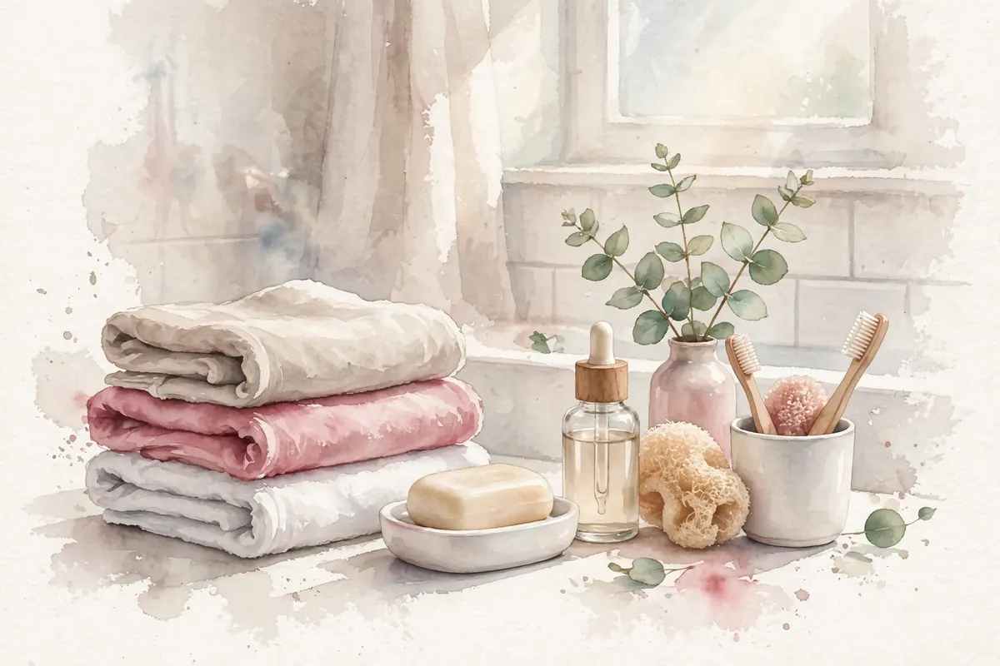

トップ ＞ ボディケア ＞ 朝シャワーの日のボディケアの段取り
朝シャワーの日のボディケアの段取り

朝にシャワーを浴びる習慣のある方は、夜の入浴とどう役割を分けるかで迷うことがあります。施術の仕事では、朝の身支度の時間は限られています。朝は「時間がない」のではなく「時間を決める」ものです。この記事では、朝シャワーの日のボディケアの段取りを整理します。
朝は「流す」、夜は「整える」
私の分け方は、朝のシャワーは汗や皮脂を流して身支度を整える時間、夜の入浴は体を温めてケアをする時間、という役割分担です。朝は時間が短いので、洗う範囲も手順も絞ります。全身を泡で洗うのは夜に回し、朝は汗をかきやすい部位を中心に流すだけでも、段取りとしては成り立ちます。
朝に体を洗う場合は、夜と同じ順番の「短縮版」を決めておくと迷いません。上から下へ、という基本の型はそのままに、部位を絞るのが短縮の方法です。シャワーの前に、今日の朝の手順を声に出すくらい単純にしておくことが、忙しい朝には有効です。出発時刻から逆算して、シャワーの開始時刻まで決めておくと、段取り全体が安定します。
朝の塗布は、着替えとの順番が鍵
朝シャワーのあとにクリームを塗る場合は、量を控えめにして、着替えまでの時間を確保します。忙しい朝は、塗る部位を「出ている部分」と「乾燥を感じやすい部分」に絞るのが現実的です。脚は夜、腕と手は朝、といった配分も、朝と夜の役割分担のひとつです。
日焼け止めを使う日は、朝の段取りの中に組み込みます。塗る範囲と量の目安は、別記事「体の日焼け止め：塗る範囲と量の目安」の考え方が参考になります。出発の何分前に塗るかまで決めておくと、朝の流れが崩れません。塗る工程を、朝食や身支度のどの支度の前後に置くかも、先に決めておく項目です。
朝の型があると、夜が楽になる
朝と夜の役割が決まると、夜のケアは「今日の分は朝に済ませた部分がある」と割り切れます。結果として、夜の手順も短縮でき、続ける負担が下がります。朝に済ませた分を夜に重ねて行う必要はない、という判断ができることも、役割分担の利点です。
シャワーの温度や時間も、朝は短めに、と決めておくのが段取りの一部です。朝の型は、シンプルであるほど回ります。まずは「朝はこの3手順だけ」と決めることから始めてみてください。
朝シャワーの水温と時間も、段取りの一部です。朝は短時間で済ませる前提で、温度は夜より控えめに設定する方もいます。浴室の換気や、タオルの用意など、朝の型に必要な準備は、前日の夜のうちに済ませておくと、朝の負担が減ります。前日の準備まで含めて、朝の段取りは設計します。
朝に髪を洗う日と洗わない日でも、型は変わります。洗う日は開始時刻を早める、というように、2つの型を用意しておくと、朝の判断が減ります。型が2つあることは、迷いの元ではなく、選択肢の整理です。
朝のケアで使うアイテムは、夜のものと分けておく方法もあります。朝用は小さいサイズで、洗面所に置く。夜用は脱衣所に置く。置き場所と役割を一致させることが、朝の短い時間では特に大切です。家族で洗面所を使う時間が重なる家庭では、使う順番まで含めて、朝の型を家族で共有しておきます。
朝の型が回り始めると、夜の入浴は「整える時間」として、より落ち着いて使えるようになります。朝と夜は、別々の段取りでありながら、一日の流れとしてつながっています。出発時刻が一定でない仕事の方は、出発時刻ごとに型を持つ方法もあります。型は、生活に合わせて直していくものです。朝の型は、夜の準備とセットで育っていきます。朝の負担が減れば、一日の始まりが軽くなります。朝は、一日の設計図です。
セラフィナ「朝は流す、夜は整える。短縮版の型があると、朝が回るね」

セラフィナ｜美容の道具箱の案内役
「量と表示が分かれば、美容は失敗しない。」——セラフィナと白猫のモコが、買う前のチェックポイントを案内します。綺麗になりたい気持ちに正直に、でも表示は冷静に読むのが、このサイトの約束です。